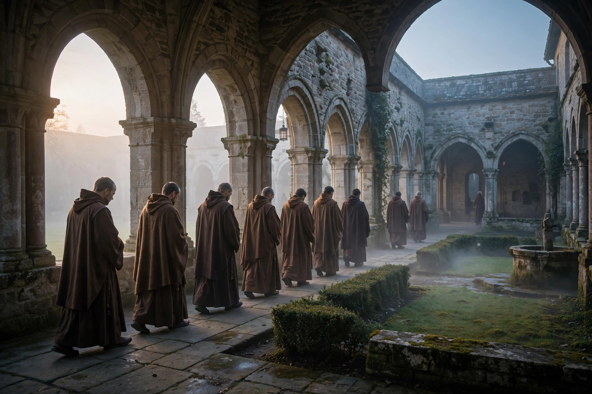

From Wikipedia, the free encyclopedia

Monasticism (from Greek monachos, "solitary", via Latin monachus) is a religious way of life in which one renounces worldly pursuits to devote oneself fully to spiritual work. Monastics — monks and nuns — typically live in monasteries under vows such as poverty, chastity and obedience, following a written rule and a daily rhythm of communal prayer, labour and study. Monasticism exists in Christianity, Buddhism, Jainism, Hinduism and other traditions.
Christian monasticism began in the Egyptian desert in the 3rd–4th centuries with hermits such as Anthony the Great. Pachomius founded the first cenobitic (communal) monasteries in Egypt, while Basil of Caesarea gave the East its enduring monastic theology. In the West, Benedict of Nursia's Rule (c. 530) became the foundation of Benedictine life and of the medieval orders that followed — Cistercians, Carthusians, and the mendicant friars of the 13th century. In the Eastern Orthodox world, Mount Athos, organised by Athanasius the Athonite in the 10th century, remains a self-governing monastic republic. Monasteries preserved learning through the early Middle Ages, copied manuscripts, ran schools and hospitals, and cleared and farmed land across Europe.
The Buddhist sangha of monks (bhikkhus) and nuns (bhikkhunis), founded by the Buddha in the 5th century BCE, is among the oldest surviving monastic institutions; monks live by alms, keep the vinaya discipline, and anchor traditions from Theravada Sri Lanka and Southeast Asia to the great Mahayana monasteries of Tibet and East Asia. Jain monks and nuns practise radical non-violence and asceticism, while Hindu sannyasis renounce caste and family for liberation, organised historically into orders such as the Dashanami founded in the tradition of Adi Shankara.
Across traditions, monastic life is structured by communal prayer offices or meditation, manual work, study, hospitality to guests, and enclosure from ordinary society. Monasteries have repeatedly been reformed and renewed — Cluny, Cîteaux, the Trappists and modern ecumenical communities such as Taizé — and continue to attract vocations and visitors seeking silence and retreat.